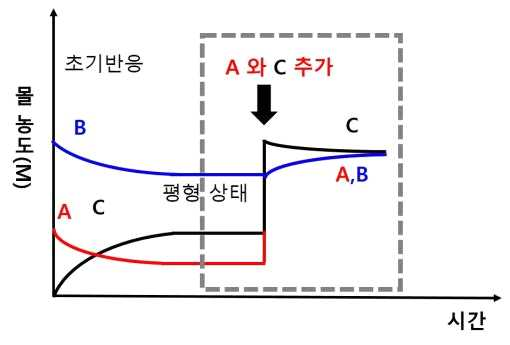

해설 2
[문항해설]
(문제 2-1) 가역 반응에서 동적 평형에 대한 이해를 평가한다. 평형 상수를 이용하여 반응의 진행 방향에 대한 예측을 평가한다.
(문제 2-2) 화학전지의 작동원리와 산화 환원 반응에 대한 이해를 평가한다.
(문제 2-3) 염의 가수 분해와 염 수용액의 특성에 대한 이해를 평가한다. 수소 이온 농도를 pH로 계산하는 방법에 대한 이해를 평가한다.
[예시답안]
2-1
\[\text{A}(g) + \text{B}(g) \rightleftharpoons 2\text{C}(g)\]
| [A] 몰 농도 | [B] 몰 농도 | [C] 몰 농도 |
|---|
| 초기 | 0.2 | 0.5 | 0 |
| 사용된 | -0.1 | -0.1 | |
| 반응후 | 0.1 | 0.4 | 0.2 (평형상태) |
평형상수(\(K\)) \([0.2]^2/[0.1][0.4] = 1\)
A와 C에 0.3 mole/L 추가하면,
반응지수 (\(Q\)) \([0.5]^2/[0.4][0.4] = 25/16\) \(Q > K\) (역반응)

2-2
납축전지에서 (+)극은 \(\text{PbO}_2\), (-)극은 Pb 판으로 구성되어 있다.
\((+)\;\text{PbO}_2 + \text{H}_2\text{SO}_4 + 2\text{H}^+ + 2e^- \to \text{PbSO}_4 + 2\text{H}_2\text{O}\)
\((-)\;\text{Pb} + \text{H}_2\text{SO}_4 \to \text{PbSO}_4 + 2\text{H}^+ + 2e^-\)
전체 반응식: \(\text{Pb} + \text{PbO}_2 + 2\text{H}_2\text{SO}_4 \to 2\text{PbSO}_4 + 2\text{H}_2\text{O}\)
2-3
\[① \;\text{CH}_3\text{COOH}(aq) + \text{NaOH}(aq) \to \text{CH}_3\text{COONa}(aq) + \text{H}_2\text{O}(aq)\]
\[② \;\text{CH}_3\text{COOH}(aq) + \text{NH}_4\text{OH}(aq) \to \text{CH}_3\text{COONH}_4(aq) + \text{H}_2\text{O}(aq)\]
\[③ \;\text{HCl}(aq) + \text{NH}_4\text{OH}(aq) \to \text{NH}_4\text{Cl}(aq) + \text{H}_2\text{O}(aq)\]
\(\text{CH}_3\text{COONa}\) 경우 (염기성)
\[\text{CH}_3\text{COO}^-(aq) + \text{H}_2\text{O}(aq) \rightleftharpoons \text{CH}_3\text{COOH}(aq) + \text{OH}^-(aq) \quad \text{염기}\]
\(\text{NH}_4\text{Cl}\) 경우 (산성)
\[\text{NH}_4^+ + \text{H}_2\text{O}(aq) \rightleftharpoons \text{NH}_3 + \text{H}_3\text{O}^+(aq) \quad \text{산}\]
\(\text{CH}_3\text{COONH}_4\) 경우 (중성)
\(0.1\;\text{M}\) 염화 암모늄 수용액의 pH를 계산 (암모니아의 이온화 상수 \(K_b = 2.0 \times 10^{-5}\))
\[\text{NH}_3(aq) + \text{H}_2\text{O}(l) \rightleftharpoons \text{NH}_4^+(aq) + \text{OH}^-(aq)\]
\[K_b = \frac{[\text{NH}_4^+][\text{OH}^-]}{[\text{NH}_3]} = 2.0 \times 10^{-5}\]
\[\text{NH}_4^+(aq) + \text{H}_2\text{O}(aq) \rightleftharpoons \text{NH}_3(aq) + \text{H}_3\text{O}^+(aq)\]
\[K_a = \frac{[\text{NH}_3][\text{H}_3\text{O}^+]}{[\text{NH}_4^+]} = \frac{K_w}{K_b} = \frac{1.0 \times 10^{-14}}{2.0 \times 10^{-5}} = 5 \times 10^{-10}\]
| \(\text{NH}_4^+\) | \(\text{NH}_3\) | \(\text{H}_3\text{O}^+\) |
|---|
| 초기농도 | 0.1 | 0 | 0 |
| 반응농도 | \(-x\) | \(+x\) | \(+x\) |
| 평형농도 | \(0.1-x\) | \(x\) | \(x\) |
\[K_a = \frac{x^2}{0.1-x} = 5 \times 10^{-10}\]
\[x \doteq 7 \times 10^{-6}\;\text{M}\]
\[\text{pH} = -\log[\text{H}_3\text{O}^+] = -\log[7 \times 10^{-6}]\]
\[\text{pH} = 5.155\]